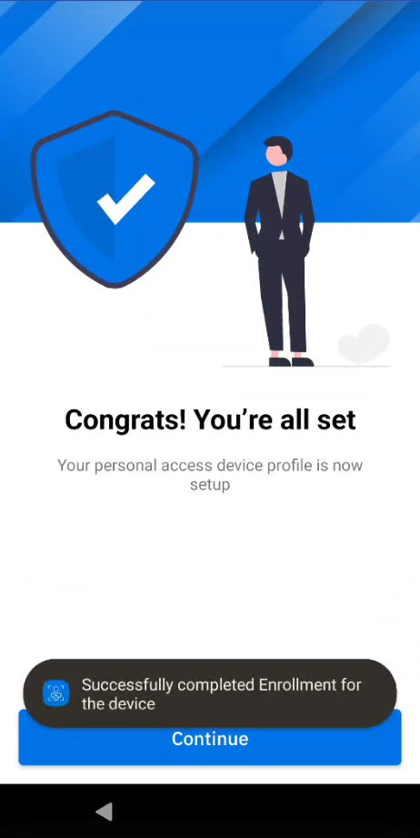
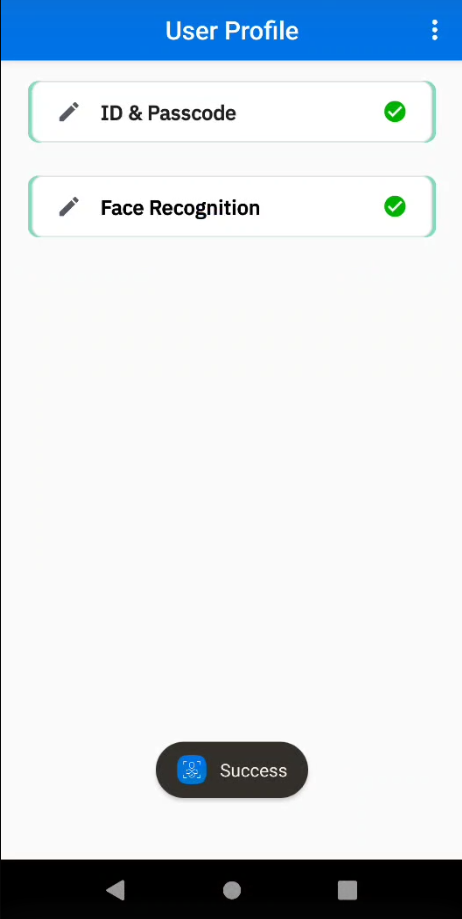
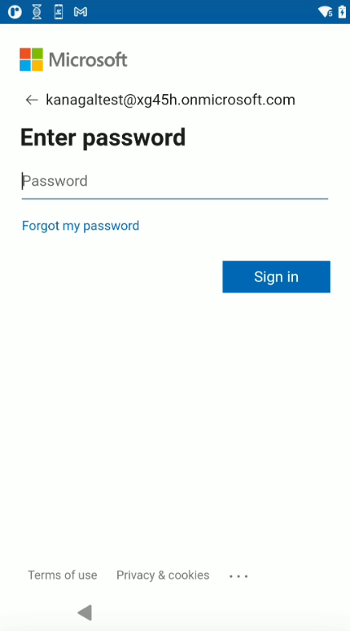

Overview
After the administrator has configured Identity Guardian and set up user profiles for either shared or personally assigned devices, users must complete a one-time enrollment process on the device. For those opting to use facial biometrics, Identity Guardian displays customizeable Terms and Conditions. Users must accept the Terms and Conditions to proceed with using facial biometrics. After enrollment, users can sign in and sign out of the device as needed.
User Enrollment
The user enrollment procedure varies depending on the device access method:
- Shared Device
- Personally Assigned Device
Shared Device
Before users can sign in or authenticate on a shared device, they must first register with Identity Guardian. Administrators create and deploy the enrollment profile, then launch Identity Guardian on the shared device to initiate the enrollment process. Alternatively, a designated device may be used for user enrollment, with administrators optionally guiding users through this initial setup.
The options available to users during the on-device enrollment process may vary based on the Enrollment Configurations set by the administrator. For more details on how to apply the settings, see the EMM Setup section.
Administrators also need to create and deploy an authentication profile to enable users to authenticate on their shared devices.
Admin-Guided
To enroll users on shared devices:
- In Identity Guardian, tap Start.

- (Optional) This is a 6 digit PIN set by the administrator. Tap Continue.

- Setup ID and passcode:
- Enter ID or email
- (Optional) Select the appropriate user role (options vary based on your adminstrator setup)
- (Optional) Enter the expiration date for the barcode. This applies for temporary users.
- Create a passcode based on the requirements set by the administrator.
- Re-enter the passcode

- (Optional) Capture facial biometrics. If opting out, tap Skip and skip to step 7 below. Otherwise, tap Add and continue with the subsequent steps.

- Read the Terms & Conditions. Tap Confirm to accept.

- Position your face within the device screen for the photo capture. Capture 1 to 3 facial photos that may vary based on the individual's look, for example, with eyeglasses, hat, etc. Confirm the photo capture(s). Tap Add to capture additional photos. Tap Next when done.

- The barcode is generated. Tap Next.

- Tap Save to save the profile.

- Tap Continue. The enrollment profile creation is complete.

Upon completion of user enrollment on the shared device, the administrator proceeds to deploy the authentication profile, which enbles users to sign into the device.
Self-Guided
Administrators can allow users to self-enroll on shared devices. This enables the admin to provide the configured device to the user, who can then enroll themselves and immeidately authenticate to the device.
Note: SSO is required as a verification method under Authentication Configuration in Managed Configurations.
Admin Setup
Configure Managed Configurations:
- Lock Screen Configuration - Expand Lock Screen Menu:
- Enable Secure Self-Enrollment and set it to true.
- Enable User Verification and select SSO.
- Save the changes.
Usage
- Self-Enrollment:
- On the lock screen, tap the menu icon in the top right corner and select Enroll User.
- Enter the SSO login credentials.
- Proceed through the enrollment screens and provide the requested information:
- Employee ID or Email (required)
- Role
- Create Passcode (required)
- Facial capture
- Generate Enrollment Barcode: The user enrollment barcode is generated and is saved to the device for future access.
- Complete Enrollment: After enrollment is complete, the lock screen appears for user authentication.
Personally Assigned Device
Before users can sign in or authenticate on a personally assigned device, they must first register with Identity Guardian. Administrators create and deploy the personally assigned profile, then launch Identity Guardian on the device to initiate the enrollment process. The options available to users during the on-device enrollment process may vary based on the Enrollment Configurations set by the administrator.For more details on how to apply the settings, see the EMM Setup section.
After the enrollment process, the user is immediately presented with the authentication screen.
To enroll users on personally assigned devices:
- Open Identity Guardian.
- Tap Start.
- Enter corporate PIN. This is a 6 digit PIN set by the administrator. Tap Continue.
- Setup ID and passcode, then tap Next.
- Enter ID or email
- (Optional) Select the appropriate user role (options vary based on setup by your adminstrator)
- Create a passcode, which can contain up to 6 alphanumeric characters.
- Re-enter the passcode.

- (Optional) Capture facial biometrics. If opting out, tap Skip and skip to step 7 below. Otherwise, tap Add and continue with the subsequent steps.
- Read the Terms & Conditions. Tap Confirm to accept.
- To add a facial photo, tap Add. Position your face within the device screen for the photo capture. Capture 1 to 3 facial photos that may vary based on the individual's look, for example, with eyeglasses, hat, etc. Confirm the photo capture(s). Tap Add to capture additional photos. Tap Next when done.
- Tap Save to save the profile.

- Tap Continue. The profile creation is complete. 
Edit Profile
To edit a profile on a personally assigned device:
- Open Zebra Biometric app.
- Enter your passcode.

- Select the item to edit:
- ID & Passcode
- Face Recognition 
- If ID & Passcode is selected, make the appropriate edits and tap Save:
- Role - select the desired role
- Passcode - enter the current passcode and the new passcode

- If Face Recognition is selected, delete the existing facial photo and replace it by capturing a new photo.

Delete Profile
To delete a user profile on a personally assigned device:
- Open Zebra Biometric app.
- Enter your passcode.
- Tap on the menu icon at the top right and select Delete Profile.

After the user profile is deleted, the enrollment screen appears for a user to re-enroll to the device and authenticate the user.
Device Sign In
After a user is enrolled, the authentication screen is displayed on the device. This screen also appears based on the lock-screen event options defined by the administrator in the managed configurations. These options can be triggered from various events such as when a user signs out, locks or reboots the device.
To sign in a device, tap Unlock.
 The device prompts the user to authenticate via the primary authentication method selected by the administrator, such as facial biometric or passcode entry. If the primary authentication method fails, the secondary authentication method is presented for the user to execute. Unlicensed devices present a passcode to be entered rather than requesting for a facial biometric.
The device prompts the user to authenticate via the primary authentication method selected by the administrator, such as facial biometric or passcode entry. If the primary authentication method fails, the secondary authentication method is presented for the user to execute. Unlicensed devices present a passcode to be entered rather than requesting for a facial biometric.
If Microsoft Authenticator app is in use, perform the following after the user unlocks the screen:
The Microsoft Authenticator app is launched prompting for user authentication. Enter the login credentials:

 After authentication is successful, the user gains access to the device.
When a user launches any app that utilizes Microsoft Authenticator app as broker, the app automatically signs in without prompting for user name or password.
Admin Bypass Passcode
A user can bypass authentication by entering the Admin Bypass Passcode. This feature is useful in situations when a user has forgetten their authentication credentials and needs access to the device, provided they have received the bypass passcode from their admin. While this feature grants device access, it does not track user accountability.
Admin Setup
Configure Managed Configurations:
- Lock Screen Configuration - Expand Lock-screen Menu:
- Enable Enable Admin Bypass Passcode on Lock screen and set it to true.
- Save the changes.
Usage
- In the lock screen, tap on the menu in the top right and select Admin Bypass.
- Enter the Admin Bypass Passcode provided by your administrator.
- The user gains device access.
Alternate Sign-In
Alternate Sign In enables users of shared devices to have alternative users login to the device. This feature is useful for scenarios involving users who may not typically have full-time access, such as temporary users, ensuring user accountability is tracked.
Note: The user must be enrolled on the device before using the alternate sign-in method.
Admin Setup
Configure Managed Configurations:
- Authentication Configuration - Expand Lock-screen Event Options:
- On Unlock / OnReboot / On AC power connected / On AC power disconnected / On device manual checkin / On user change
- Enable Alternative Verification Setup and select the desired Verification Setup that specifies the authentication required for the alternate login.
- On Unlock / OnReboot / On AC power connected / On AC power disconnected / On device manual checkin / On user change
- Lock Screen Configuration - Expand Lock Screen Menu:
- Enable Customize Alternative Login Button and enter a name for the button designated for alternate login.
- Save the changes.
Usage
- In the lock screen, tap the button with the customized text located above the Unlock button.
- Proceed with the alternate authentication method set by the administrator.
- The user gains device access.
User Authentication Scenarios
This video demonstrates various scenarios of user device authentication. In this example, one group of authentication settings is applied to a shared device with the following configurations:
- Comparison source: Barcode
- Primary authentication: SSO
- Secondary authentication: Passcode
- Fallback authentication: Admin bypass passcode
Device Sign Out
Sign Out only applies to shared devices. To sign out a device, perform one of the following:
- Open Identity Guardian app (Zebra Biometric) and tap Sign out.

- Swipe down to open the notification drawer. From the Identity Guardian notification, tap Sign Out.

- Lock the device.
- Restart the device (if configured by the administrator).
After a device is signed out, the lock screen is visible:
Lock Device
This section discusses features designed to enhance user experience and security on the device lock screen.
Custom Message
A user can create a custom message to display on the lock screen, which can be useful in various scenarios. For shared device users, it allows them to leave instructions for the next user. For personally assigned device users, it can serve as a device identifier or a personal reminder. This custom message remains visible to all users when they sign in or sign out of the device.
Admin Setup
Configure Managed Configurations:
- Lock Screen Configuration - Expand Custom Lock Screen Message:
- Enable Allow Custom Lock Screen Message and set it to true.
- Enable Custom Lock Screen Message Source and select App Specific.
- Save the changes.
Usage
To create or edit a custom message on the lock screen:
- The user signs in and gains access to the device.
- Open Identity Guardian from the apps menu.
- From the top right, tap on the message icon to access the message settings.
- Enter the message to display on the lock screen.
- Tap Save.
- Lock the device. The custom message is now displayed on the lock screen.
Auto-Unlock
Automatically unlock the device with facial authentication, eliminating the need to tap the "Scan to Unlock" button in the lock screen. When initially unlocking, users are prompted to tap "Scan to Unlock." With the auto-unlock feature enabled, this step is bypassed, and users are immediately directed to scan their face for authentiction to unlock the device.
Requirements:
- Face authentication is mandatory for primary authentication.
- For shared devices, Authentication Data Storage is necessary (not required for personally assigned devices).
Admin Setup
Configure Managed Configurations:
- Lock Screen Configuration - Expand User Verification Methods:
- Verification Setup1:
- Enable Comparison Source and select BARCODE.
- Expand Primary Authentication Method. Enable Primary Authentication Factor and select FACE.
- Verification Setup1:
- Lock Screen Configuration - Expand Auto Unlock:
- Enable On Unlock and select true.
- Save the changes.
Usage
- First-time Device Unlock:
- On the lock screen, tap Scan to Unlock button.
- Follow the alternate authentication method configured by the administrator.
- The user gains access to the device.
- Subsequent Unlock Attempts:
- The user is immediately prompted to use the alternate authentication method.
Guardian Safe
Early Access Preview: The Guardian Safe feature is provided as an Early Access Preview. As such, please note that this feature is subject to change in future Identity Guardian releases.
Guardian Safe streamlines your app experience by securely storing your credentials after a single entry on the login screen of any native or web app (such as Microsoft Edge or Google Chrome). Effortlessly access your apps across shared devices as Guardian Safe automatically fills in your credentials for subsequent login attempts, enhancing productivity and ensuring robust security.
Compatible with both SSO and non-SSO environments, easily manage your passwords with Guardian Safe. View, modify or delete saved credentials through the Password Vault. Optionally, apps can be designated not to have passwords saved through Guardian Safe. Password Vault uses Android Accessibility Service for auto-filling the password. Therefore, Identity Guardian must be granted access to Android Accessibility Service.
Requirements:
- Internet access is required.
- An Identity Guardian license and ZDNA Cloud activation by Zebra support are required.
Prerequisites:
- The device must be enrolled and connected to ZDNA Cloud.
- Both barcode and facial biometrics are required for authentication verification. The user enrollment barcode must be re-created to include both barcode and facial biometric data.
- Identity Guardian must be granted access to Android Accessibility Service. This can be done either manually through the app or automatically via Guardian Safe Configuration from Managed Configurations.
- Temporary Data Storage must be enabled in Authentication Configuration from Managed Configurations.
Notes:
- The Password Vault utilizes a securely stored master password encoded within the barcode for encryption and decryption. If the user misplaces this barcode, they will not be able to access the Password Vault with a new barcode, requiring the saving of new passwords for all applications.
- Common values supported for user authentication include username, user ID, email, and password, which can be part of resource ID, hint text or group labels.
- In ZDNA Cloud, when a user is deleted from the Device Users section, any passwords saved are removed as well.
Login
Initial Setup of Guardian Safe:
- Enable Guardian Safe:
- Open Identity Guardian.
- In the Identity Guardian screen, tap the menu icon in the top right corner and select Guardian Safe.
- Scan your user barcode and then perform a facial biometric scan.
- In the Guardian Safe screen, tap the menu icon in the top right corner and select Settings.
- Toggle to enable Guardian Safe for all applications.
- Grant Accessibility Permission: If Automatically Grant Accessibilty Permission is enabled by your admin (see Guardian Safe Configuration from Managed Configurations), skip this step. Otherwise, the Accessibility Service Disclosure statement is displayed and permissions must be enabled for Identity Guardian:
- Tap Accept.
- Tap Identity Guardian.
- Tap Use Identity Guardian.
- Tap Allow.
- Tap Back. Repeat this step until Guardian Safe is closed.
Guardian Safe is now enabled. Any apps with a login screen will trigger Guardian Safe to prompt saving the login credentials or auto-populate the login credentials if they are already saved.
Save Credentials
Save your app login credentials:
- Open an app with a login screen.
- Enter your username.
- A prompt appears asking if you want to save your credentials. Tap Yes.
- The Guardian Safe input screen appears. Enter your credentials and tap Save Credentials.
Your login credentials are now saved and will be available to populate when you tap the Identity Guardian sign-in floating button during future login attempts.
Populate Credentials
Populate app credentials: After an app's login credentials are saved, subsequent attempts to open the app will allow the credentials to be populated in the login screen.
- Open an app in which the login credentials have been saved.
- On the login screen, after the user taps on the password field, the user is immediately prompted to authenticate via facial biometric scan.
- When the facial scan is successful, the login screen appears with the login credentials automatically populated for the user to sign into the app.
Manage Credentials
View, edit or delete apps that have saved passwords through the Password Vault:
- Open Identity Guardian.
- Tap the top right menu and select “View My Vault”.
- The user must scan their user barcode, then perform facial authentication.
- The apps with passwords saved are listed.
- To edit the login credentials for an app, tap the menu icon on the right side of the app listed, then select Edit. Make the desired modifications for the username or password, then tap “Save Credentials”.
- To delete the login credentials for an app, tap the menu icon on the right side of the app listed, then select Delete. Tap Yes in the confirmation message. The app is removed from the list.
- Ignore Permanently tab – displays a list of apps in which “Ignore Permanently” was selected when prompted to save the password.
ZDNA Cloud
With the Zebra DNA Cloud platform, Identity Guardian provides administrators with visibility into user activities. This includes the ability to track who has signed in and out of devices, the security measures in place, usage times, and more. Additionally, administrators have the ability to expire users, reset PIN passcodes, and override screen locks.

For more information, see the ZDNA Cloud documentation.